Étudiant en BTS Services Informatiques aux Organisations au lycée Raoul Follereau, Nevers. Passionné par l'informatique, je construis des compétences solides en développement.
Titulaire d'un Bac Général, j'ai choisi de poursuivre mes études en BTS Services Informatiques aux Organisations option SLAM au lycée Raoul Follereau de Nevers, motivé par une passion pour l'informatique et plus particulièrement pour le développement. Ce qui m'attire dans le développement, c'est la possibilité de concevoir des outils concrets qui répondent à de vrais besoins. Partir d'une problématique, imaginer une solution et la voir fonctionner est quelque chose que je trouve gratifiant. Mes deux stages m'ont d'ailleurs conforté dans cette voie, en me permettant de développer des applications réelles dans des contextes professionnels variés. À l'issue du BTS, je souhaite poursuivre mes études afin d'approfondir mes compétences en développement et d'accéder à terme au métier de développeur. Mon objectif est de continuer à monter en compétences sur des technologies modernes et de m'investir dans des projets ambitieux.
La Fédération des Centres Sociaux de la Nièvre a pour mission, outre de regrouper les Centres Sociaux et Socio-Culturels, de favoriser leur développement, de les représenter, de susciter la création de nouveaux Centres. Elle élabore et fait valoir auprès des autorités compétentes les grandes orientations des politiques d'équipement et de fonctionnement des Centres Sociaux. Elle apporte éventuellement une aide technique à ses ressortissants dans différents domaines tels que l'information, le financement, la gestion, la formation, l'analyse des besoins et le contrôle des résultats.
Cliquez sur une mission pour afficher son détail et les documents associés.
Les agents de la fédération sont régulièrement amenés à se déplacer dans le cadre de leurs missions, ce qui génère des notes de frais prises en charge par la structure. Cependant, la gestion de ces remboursements était entièrement manuelle, ce qui entraînait des délais importants et une organisation peu efficace. Il m'a alors été confié la réalisation d'une application web afin d'automatiser et de simplifier ce processus.
Sur recommandation d'un employé de la fédération, nous avons utilisé Bolt, un outil de développement assisté par intelligence artificielle permettant de générer rapidement des interfaces et du code, ce qui nous a permis d'accélérer et de simplifier le développement de l'application. Le langage de programmation choisi a été PHP.
La fédération travaillant exclusivement sur des Mac, cela a posé quelques difficultés, notamment en raison de différences de compatibilité et d'environnement de développement entre macOS et les configurations habituelles, nécessitant des ajustements techniques spécifiques.
Par ailleurs, la fédération souhaitait que l'application soit utilisable sur mobile, ce qui a nécessité un travail d'adaptation de l'interface pour la rendre responsive. Différents niveaux de comptes utilisateurs ont été mis en place, avec des droits d'accès variés selon les profils, notamment un compte dédié à la comptable disposant de droits étendus pour la validation et le suivi des remboursements.
L'application permet également de photographier directement le justificatif de paiement depuis un appareil mobile, condition nécessaire pour qu'une note de frais soit prise en charge. Une fois validées, les notes de frais peuvent être téléchargées au format PDF pour faciliter l'archivage, en complément de l'historique intégré à l'application. Pour l'hébergement, j'ai utilisé Supabase, une plateforme cloud de Google offrant des services de base de données et d'hébergement en temps réel.
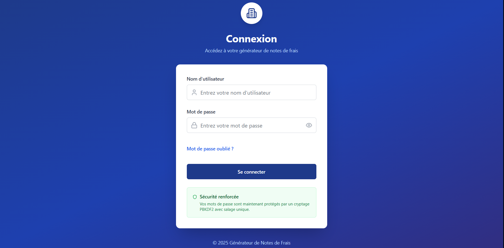
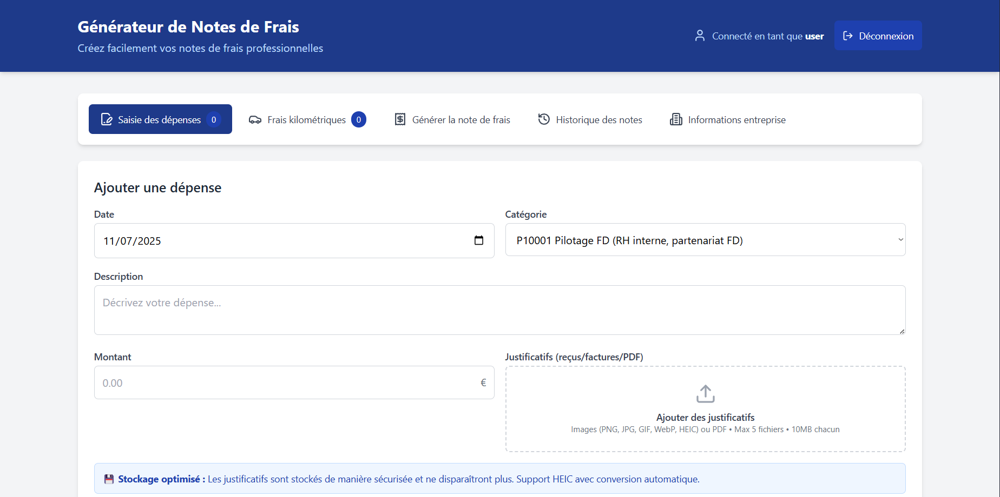
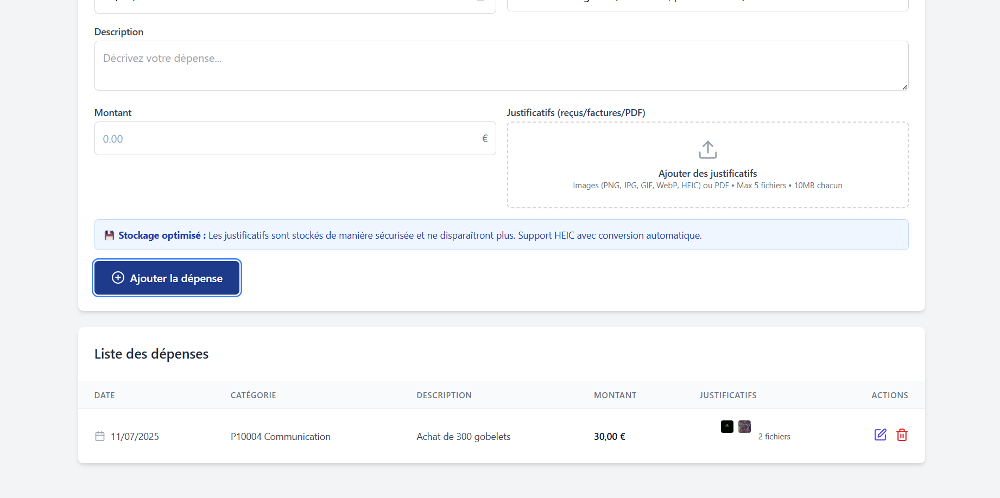
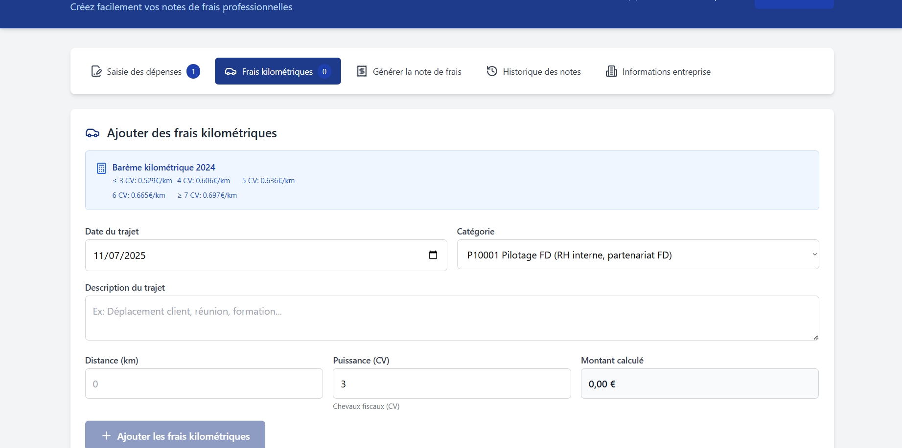
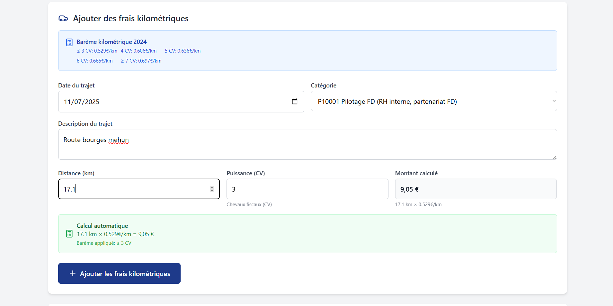
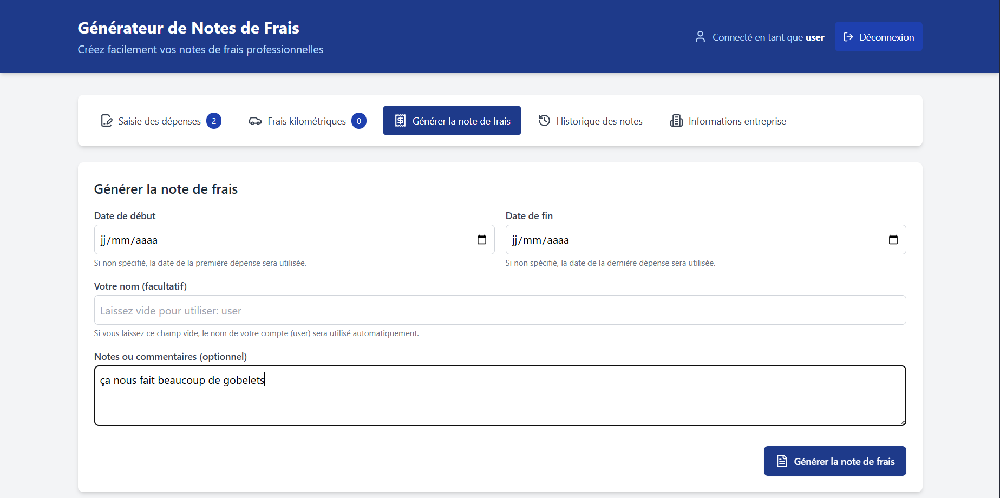
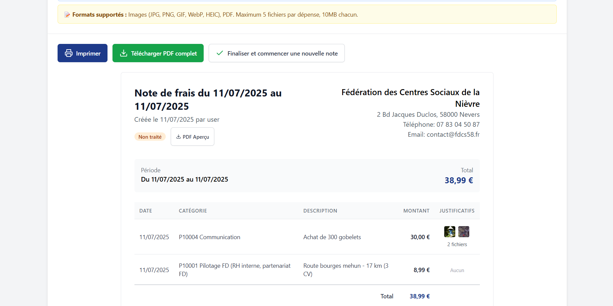
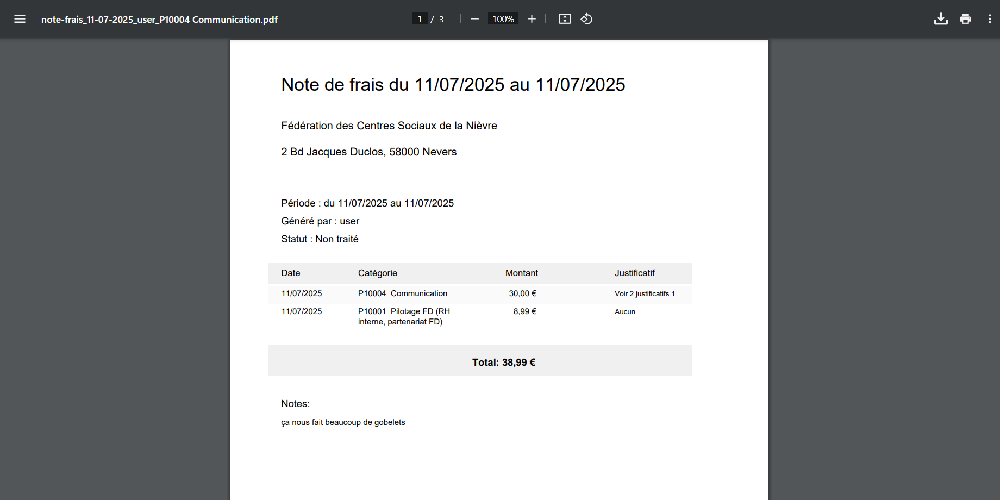
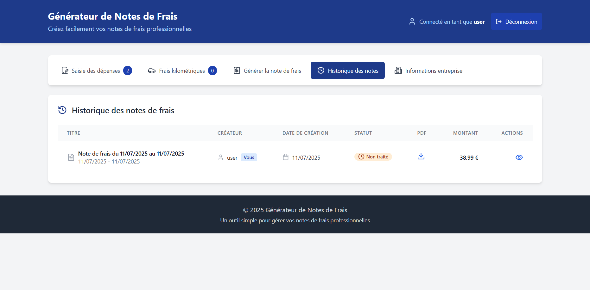
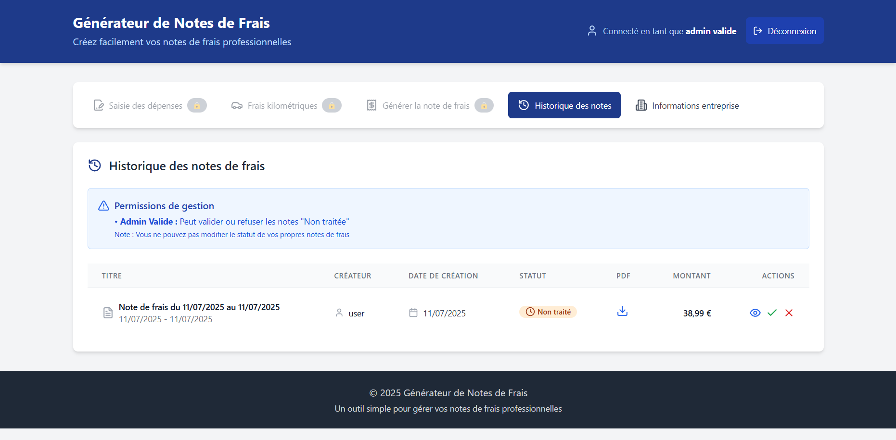
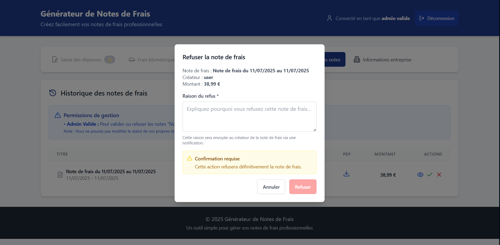
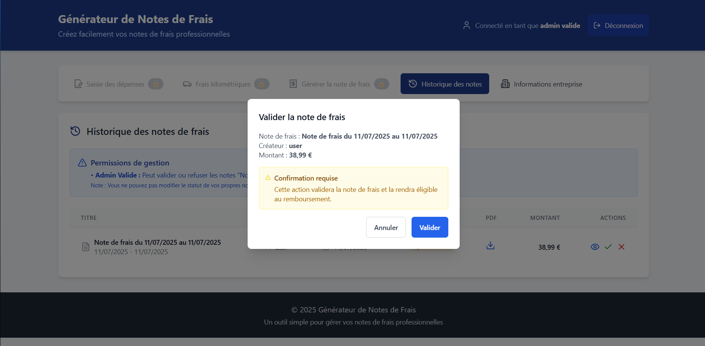
Le site web de la fédération était mal référencé sur certains moteurs de recherche. Il a donc fallu identifier les causes de ce problème afin d'y apporter les corrections nécessaires.
La fédération m'a transmis les accès au compte WordPress sur lequel le site a été développé. Après analyse, le site nécessitait plusieurs mises à jour, notamment au niveau du SEO (Search Engine Optimization), qui désigne l'ensemble des techniques visant à améliorer la visibilité et le positionnement d'un site web dans les résultats des moteurs de recherche tels que Google. Cependant, malgré les optimisations effectuées, aucune amélioration significative n'a été constatée.
La fédération a donc décidé de confier cette mission à Mycom, une agence de communication et de création digitale basée à Nevers, qui avait déjà assuré la conception initiale du site web et disposait ainsi d'une meilleure connaissance de son architecture et de son contenu.
Lors de mon stage, j'ai pu constater que les membres de la fédération adoptaient des pratiques peu recommandables en matière de cybersécurité : des mots de passe inscrits et laissés à la vue de tous, des mots de passe identiques réutilisés sur plusieurs comptes, ainsi que des mots de passe trop simples ne respectant pas les critères de sécurité recommandés.
Afin de remédier à ces lacunes, j'ai organisé des sessions de sensibilisation avec les employés de la fédération portant sur les bonnes pratiques en matière de cybersécurité, notamment : l'utilisation d'un gestionnaire de mots de passe, la création de mots de passe complexes et uniques, la vigilance face aux tentatives de phishing, ou encore la mise à jour régulière des logiciels et systèmes.
En parallèle, j'ai conçu des flyers de prévention destinés à être affichés dans les locaux, en veillant à respecter la charte graphique de la fédération pour assurer une cohérence visuelle avec son identité.
Ce stage à la Fédération des Centres Sociaux de la Nièvre a été une expérience positive qui m'a permis de mettre en pratique les compétences acquises en formation, notamment le développement d'une application web en PHP, la gestion de l'hébergement via Firebase, ainsi que des notions de SEO et de cybersécurité. J'ai également progressé sur le plan comportemental en développant mon autonomie et ma capacité à communiquer avec des utilisateurs non techniciens. Les principales difficultés rencontrées ont été la compatibilité avec l'environnement Mac de la structure et la résolution du problème de référencement, qui s'est avérée plus complexe que prévu. Ce stage a conforté mon projet de poursuivre mes études après le BTS, afin d'approfondir mes compétences en développement.
Le Conseil départemental de la Nièvre intervient dans de nombreux domaines au service des habitants : il assure l'accompagnement social et médico-social des familles et personnes vulnérables (RSA, handicap, dépendance), gère les 30 collèges publics et le transport des élèves handicapés, entretient les 4 360 km de routes départementales, et finance les sapeurs-pompiers (SDIS). Il soutient également le sport, la culture (bibliothèque, archives, musées), le tourisme et intervient dans la protection de l'environnement et l'aménagement du territoire nivernais.
Cliquez sur une mission pour afficher son détail et les documents associés.
Le Conseil départemental de la Nièvre utilise actuellement un logiciel tiers payant pour gérer les entretiens professionnels annuels de ses employés. Ce logiciel, devenu obsolète et peu ergonomique, ne répondait plus aux besoins des utilisateurs. La direction a donc souhaité évaluer la faisabilité d'un développement en interne afin de remplacer cette solution externe.
Mon tuteur de stage m'a confié la réalisation d'un démonstrateur, c'est-à-dire une application fonctionnelle développée avec le framework Laravel et la base de données PostgreSQL, destinée à illustrer ce que pourrait être une solution maison. L'objectif était de prouver qu'il était possible de concevoir en interne un outil plus moderne, intuitif et adapté aux besoins spécifiques du Conseil départemental, tout en s'affranchissant du coût et des contraintes liés au logiciel existant.
J'ai travaillé seul sur ce projet tout au long des 8 semaines de stage. Dès le départ, mon tuteur avait conscience que le projet ne pourrait pas être finalisé dans ce délai, d'une part parce qu'il s'agit d'un projet d'envergure, et d'autre part parce que je ne connaissais pas les outils imposés. J'ai donc dû apprendre de manière autonome le framework Laravel ainsi que le système de gestion de base de données PostgreSQL avant de pouvoir commencer à développer. Dans un premier temps, j'ai consacré du temps à la montée en compétences sur ces deux technologies à travers la documentation officielle et des ressources en ligne. Une fois les bases acquises, j'ai analysé les besoins exprimés par mon tuteur afin de comprendre le fonctionnement des entretiens professionnels annuels au sein du Conseil départemental. J'ai ensuite conçu la base de données sur papier en modélisant les différentes entités et leurs relations, avant de l'implémenter sous PostgreSQL. Le développement de l'application a été réalisé avec Laravel, en respectant son architecture MVC (Modèle - Vue - Contrôleur). J'ai pu développer un système d'authentification sécurisé ainsi qu'un module de gestion des entretiens professionnels permettant de créer et consulter les entretiens annuels des agents. L'objectif n'était pas de livrer une application complète, mais de produire un démonstrateur fonctionnel illustrant la faisabilité d'un développement en interne pour remplacer le logiciel existant.
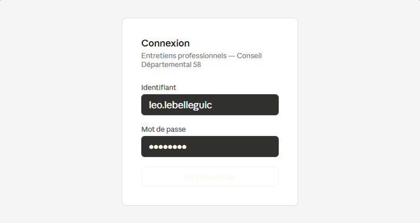
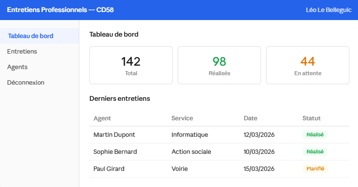
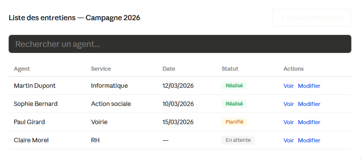
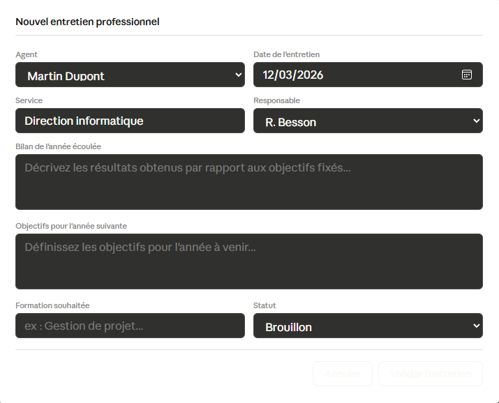
Ce stage au Conseil départemental de la Nièvre a été une expérience particulièrement formatrice. Travailler seul sur un projet d'envergure, avec des technologies que je ne maîtrisais pas au départ, m'a contraint à développer une autonomie et une capacité d'apprentissage rapide. Sur le plan technique, j'ai découvert et appris à utiliser le framework Laravel ainsi que PostgreSQL de manière autonome, en m'appuyant sur la documentation officielle et des ressources en ligne. Cette expérience m'a montré qu'il est tout à fait possible d'acquérir de nouvelles compétences techniques par soi-même, ce qui est une qualité essentielle dans le métier de développeur. Sur le plan comportemental, ce stage m'a appris à gérer la pression d'un projet réel, à communiquer régulièrement avec mon tuteur sur l'avancement du travail, et à faire preuve de rigueur dans mon organisation malgré les difficultés rencontrées. La principale difficulté a été de devoir apprendre deux outils nouveaux simultanément tout en avançant sur le développement. Cela a ralenti la progression, mais m'a permis de mieux comprendre l'importance de bien choisir et maîtriser ses outils avant de se lancer dans un projet. Ce stage a renforcé mon envie de poursuivre dans le développement d'applications et conforté mon projet de continuer mes études après le BTS. Il m'a également donné envie d'approfondir mes connaissances sur les frameworks modernes, qui sont très utilisés dans le monde professionnel.
Réalisations effectuées dans le cadre de la formation BTS SIO.
Chaque situation mentionne son intitulé, le contexte et les productions associées.
Ce projet a été réalisé dans le cadre du module de développement applicatif (B2.1) en deuxième année de BTS SIO option SLAM, en équipe de 2 personnes. L'objectif était de concevoir et développer une application de gestion de stages pour l'institut de formation fictif I-CGO (Institut Claude Gaston Octave), situé à Dijon avec deux agences à Beaune et Auxerre. L'application existante, développée sous Access, était devenue obsolète et incomplète. Il nous a été demandé de la remplacer par une nouvelle solution moderne, capable de gérer le catalogue des formations, le recrutement des formateurs et les inscriptions des stagiaires.
Dans un premier temps, nous avons analysé le cahier des charges fourni afin de comprendre le domaine de gestion et les fonctionnalités attendues. Nous avons ensuite réalisé une étude des données en prenant en compte les nouvelles règles de gestion, ce qui nous a conduit à produire un MCD (Modèle Conceptuel de Données) mis à jour ainsi que le modèle relationnel correspondant. La base de données a été créée sous SQL Server, alimentée à partir d'un jeu d'essai fourni. L'application a été développée en C# avec Visual Studio, en respectant une architecture en couches (DAL, BLL, IHM) et les normes de développement imposées par le projet. Les fonctionnalités réalisées comprennent la gestion du catalogue des formations (stages, modules, sessions) et l'inscription des stagiaires, en complément des modules agences et formateurs déjà fournis. Nous avons utilisé Git et GitHub pour la gestion des versions et le travail collaboratif en équipe, avec un suivi de projet régulier via une fiche de suivi et un planning des tâches. Un plan de tests a été élaboré, ainsi qu'une documentation technique et utilisateur pour chaque fonctionnalité développée.
Ce projet a été réalisé dans le cadre du module de développement applicatif (B2.1) en deuxième année de BTS SIO option SLAM, en équipe de 2 personnes. L'objectif était de concevoir et développer une application web de gestion des comptes-rendus de visite pour le laboratoire pharmaceutique fictif Galaxy Swiss Bourdin (GSB). L'application existante, développée sous Access 2003, était devenue obsolète. Il nous a été demandé de la remplacer par une nouvelle solution web, capable de gérer les comptes-rendus de visite des délégués médicaux auprès des praticiens, avec différents niveaux d'accès selon le profil de l'utilisateur (visiteur, délégué régional, responsable).
Dans un premier temps, nous avons analysé le cahier des charges afin de comprendre le domaine de gestion et les nouvelles règles métier : gestion des collaborateurs selon leur rôle (visiteur, délégué, responsable), des motifs de visite, des praticiens remplaçants et des médicaments présentés sous forme d'échantillons. Nous avons complété le modèle de données existant en conséquence, puis généré le script SQL de création des tables sous MySQL. L'application a été développée en PHP en respectant une architecture MVC (Modèle - Vue - Contrôleur), avec Laragon comme environnement de développement local. Les accès à la base de données sont centralisés dans une classe PdoGsb utilisant PDO, avec gestion des transactions pour garantir l'intégrité des données lors de l'ajout ou de la modification d'un compte-rendu. Les fonctionnalités développées comprennent l'ajout et la modification de comptes-rendus de visite, la gestion des praticiens, la consultation des médicaments et des comptes-rendus par période, ainsi que les modules délégué et responsable. Un système d'authentification redirige l'utilisateur vers le sommaire correspondant à son profil après connexion. Nous avons utilisé Git et GitHub pour la gestion des versions et le travail en équipe, avec un suivi de projet régulier via une fiche de suivi et un planning des tâches réparties entre les membres du groupe. Un plan de tests a été élaboré, ainsi qu'une documentation technique et utilisateur.
Suivi régulier de l'actualité informatique et cybersécurité.
Compétences mobilisées dans chaque situation professionnelle — épreuve E5 BTS SIO.
| Compétences mises en oeuvre \ Réalisations professionnelles | Projet ICGO | Projet GSB | Veille Informationnelle | Application de note de frais | Référencement SEO Wordpress | Sensibilisation cybersécurité | Application entretien professionnel |
|---|---|---|---|---|---|---|---|
| Gérer le patrimoine informatique | ✔ | ||||||
| Répondre aux incidents et aux demandes d’assistance et d’évolution | ✔ | ✔ | ✔ | ✔ | ✔ | ||
| Développer la présence en ligne de l’organisation | ✔ | ||||||
| Travailler en mode projet | ✔ | ✔ | |||||
| Mettre à disposition des utilisateurs un service informatique | ✔ | ✔ | |||||
| Organiser son développement professionnel | ✔ | ✔ |